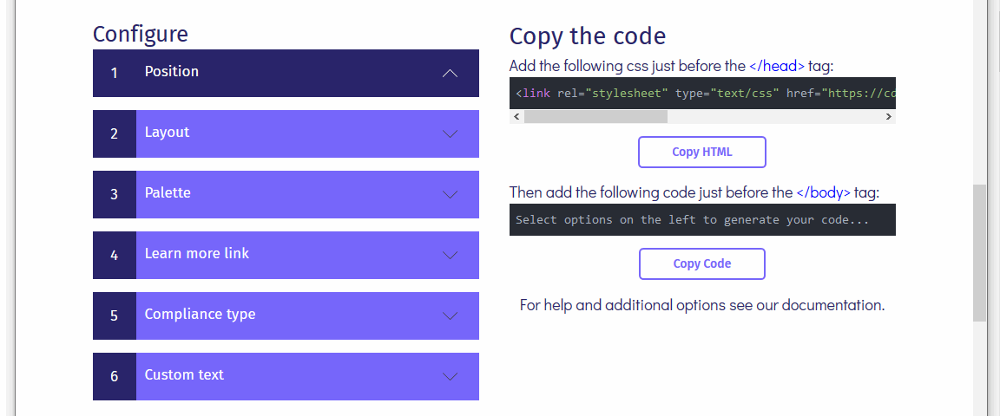
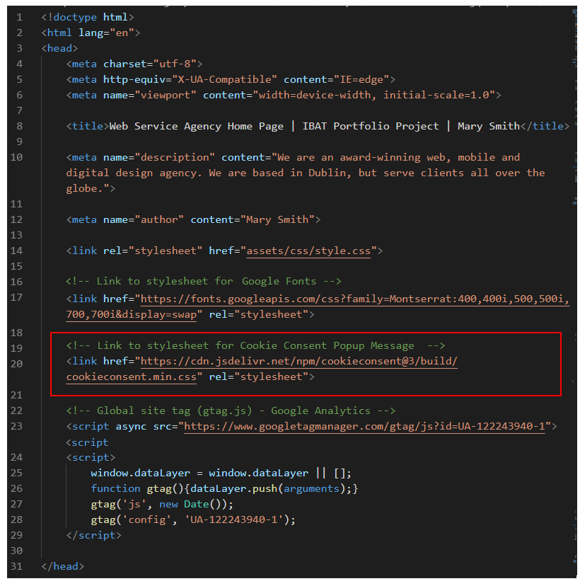

Introduction
In this task you will create a ‘pop-up᾿ privacy and cookie consent message to include in your web pages. The easiest way to do this is to use the privacy pop-up message creator from Insites.
You will then copy-and-paste your generated code into a template file named privacy-template.html. In future, whenever you need to include the privacy pop-up message in a web page, you can simply copy it from the template into your that web page.
Here is a sample privacy-template.html file. It only ‘looks’ blank. You can see the code if you view the page’s source in your web browser.
Learning Goals
At the end of this Tutorial you will be able to:
- Use the online services from Insites to generate a privacy and cookie consent 'pop-up' message.
- Create a new, empty HTML file into which you will copy-and-paste the generated HTML and JavaScript code.
- Edit the copied HTML as required.
The templates folder
Before continuing, ensure you have a sub-folder named templates in your main websites folder.

You will use this folder as a place to store HTML, CSS and JavaScript snippets you can copy-and-paste into your web pages and stylesheets.
Generate the Privacy Pop-up Message
Follow these steps.
- Go to the Insites web page at this web address:
https://cookieconsent.insites.com/
 Click the link named Download Open Source.
Click the link named Download Open Source.
- Clicking this button does not actually download any files to your computer. It simply brings you to another web page named 'Download Cookie Consent'. See below.
 At the lower-right of this screen is a button named Start Coding. Click on it.
At the lower-right of this screen is a button named Start Coding. Click on it.
- You are now ready to work through the various Configure options displayed at the left of this screen. This will generate the pop-up message in the Copy the code section at the right of the screen.

- On the left of the screen, under the 1: Position heading, you can see that the Banner bottom option is selected by default, You need not change this.

- Next, click the 2: Layout heading to view your options. Accept the default layout of Block.

- Click the 3: Palette heading and accept the default first option. It shows a yellow button against a black background.

- Click the 4: Learn more link heading and the then click the second option, named Link to your own policy. In the box displayed, enter a web address similar to the following, where username is the username you have chosen for your GitHub account:
https://username.github.io/privacy.html
 You will create the actual privacy.html web page in a later project.
You will create the actual privacy.html web page in a later project.
- Click the 5: Compliance type heading and select the first option, Just tell users that we use cookies.

- Click the 6: Custom text heading to view the message that will be displayed to the website visitor. You need not change this.

- On the right side of the screen, you can see two blocks of code that have been created for your pop-up privacy message.
- The first is the link to the CSS stylesheet file that controls the appearance of the pop-up message.

- The second is the JavaScript code that creates the pop-up message.

But before you copy these two items, you need to create a file to copy them to.
Leave the Insites cookie code generator screen open in your web browser.
Create the template file
Follow these steps to create a new, blank web page which will be your privacy template file.
- Open your Visual Studio text editor choose File | New File to create a new HTML file to store both the HTML and the JavaScript code for the privacy pop-up message.

- Choose File | Save As ... and save the file in your c:\\websites\templates folder with the name privacy-template.html

- Click anywhere in this new, empty file, hold down the SHIFT key, press the exclamation mark key ! and then press ENTER.
 Visual Studio adds some 'standard' HTML tags to your file as shown below.
Visual Studio adds some 'standard' HTML tags to your file as shown below.

- Change the text in the <title> tag from 'Document' to 'Privacy Template'.
 Also, between the closing </head> tag and the opening <body> tag, press ENTER a few times to add a few blank lines between them.
You are now ready to copy-and-paste to your file.
Also, between the closing </head> tag and the opening <body> tag, press ENTER a few times to add a few blank lines between them.
You are now ready to copy-and-paste to your file.
- In your web browser, return to the Insites cookie code generator screen.
- Click the Copy HTML button, switch to Visual Studio, and paste the text just before the closing </head> tag of your privacy-template.html file as shown below.
To make your web page easier to read, press the ENTER key to add a blank line before and after the pasted text.

- Next, return to the Insites cookie code generator screen.
Click the Copy code button, switch to Visual Studio, and paste the text just before the closing </body> tag at the end of your privacy-template.html file as shown below.

- In Visual Studio, save your privacy-template.html file.
- In your web browser, you can now close the Insites online cookie generator tab.
In your privacy-template.html file, you will find it helpful to add the following or similar comment line in the <head> above the link to the CSS cookie stylesheet.
Adding such a comment line will make the <head> sections of the web pages you create easier to read. See the example below.

Also, add the following comment line just above the JavaScript code near the bottom of the template web page.
In future, whenever you need to add the privacy pop-up message to a web page, you can simply:
- Open this privacy-template.html file in your web browser
- View the page source code
- Copy-and-paste the CSS link to the <head> of your web page and
- Copy-and-paste the JavaScript code to just before the closing </body> tag of your web page.
Upload your privacy template to GitHub
The final step is to upload the following file your created to GitHub from your websites/templates sub-folder:
privacy-template.html
Your file will be published at web addresses similar to the following:
https://username.github.io/privacy-template.html
It may take a few minutes for your uploaded files to appear on GitHub.
Return to Contents.